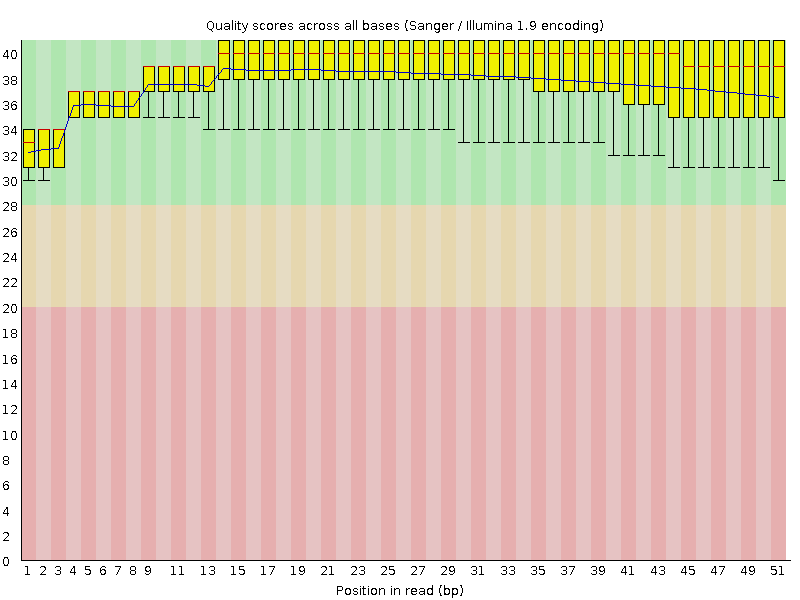
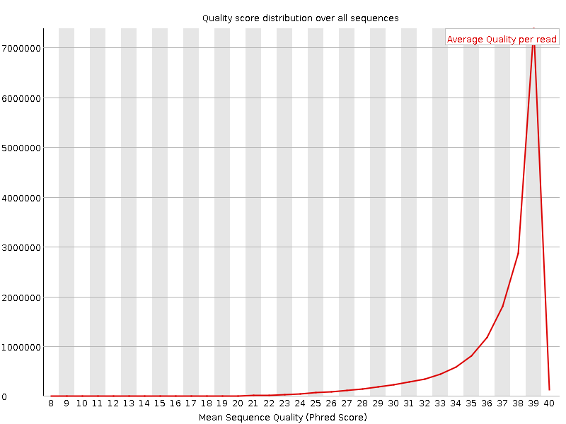
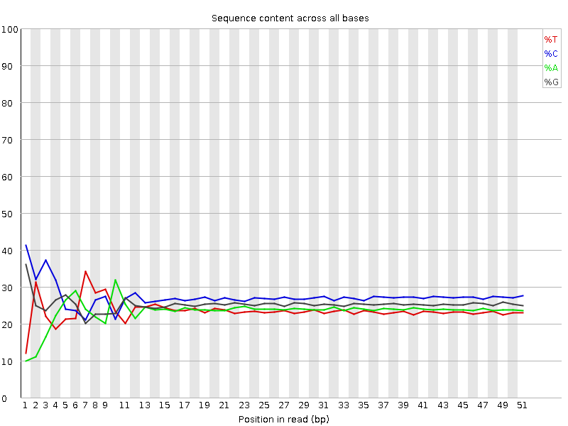
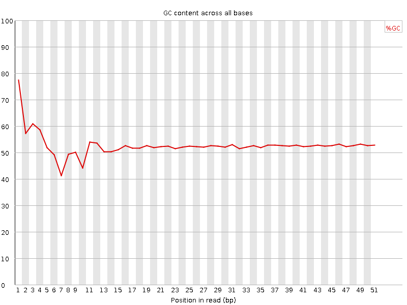
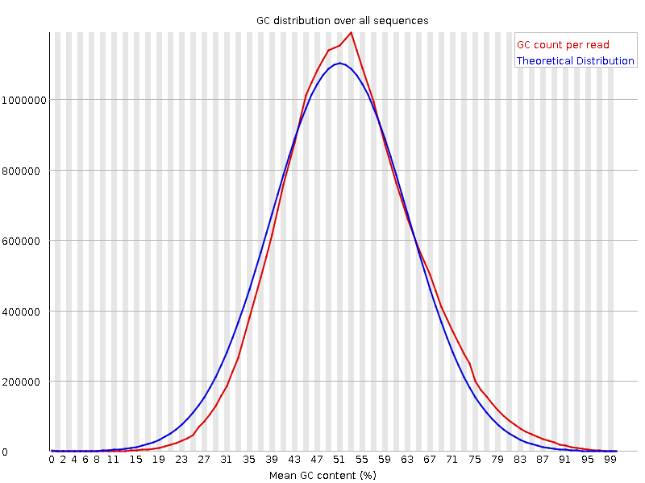
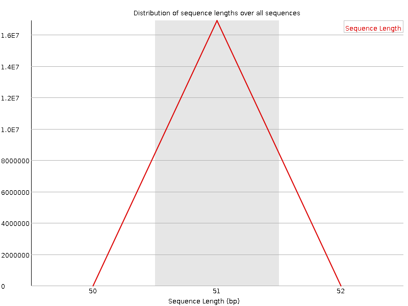
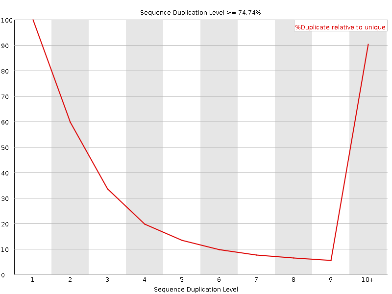
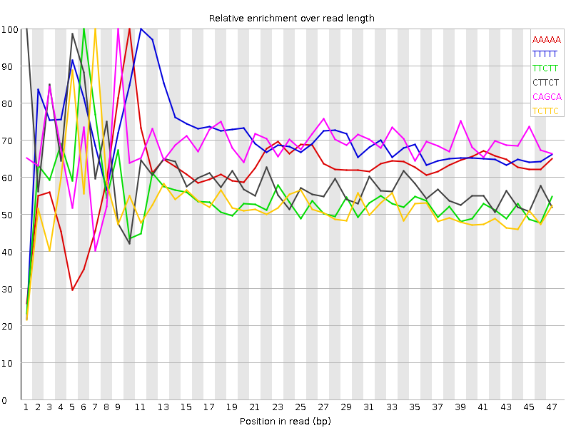

![[OK]](Icons/tick.png) Basic Statistics
Basic Statistics
| Measure | Value |
|---|---|
| Filename | Sample_7_L001.fastq |
| File type | Conventional base calls |
| Encoding | Sanger / Illumina 1.9 |
| Total Sequences | 16909004 |
| Filtered Sequences | 0 |
| Sequence length | 51 |
| %GC | 52 |
Per base sequence quality

Per sequence quality scores

![[FAIL]](Icons/error.png) Per base sequence content
Per base sequence content

Per base GC content

Per sequence GC content

Per base N content

Sequence Length Distribution

Sequence Duplication Levels

![[WARN]](Icons/warning.png) Overrepresented sequences
Overrepresented sequences
| Sequence | Count | Percentage | Possible Source |
|---|---|---|---|
| GATCGGAAGAGCACACGTCTGAACTCCAGTCACATCACGATCTCGTATGCC | 43548 | 0.25754325920083765 | TruSeq Adapter, Index 1 (100% over 51bp) |
| ATATATATATATATATAGATCGGAAGAGCACACGTCTGAACTCCAGTCACA | 21628 | 0.12790818430228063 | Illumina Multiplexing PCR Primer 2.01 (100% over 34bp) |
Kmer Content

| Sequence | Count | Obs/Exp Overall | Obs/Exp Max | Max Obs/Exp Position |
|---|---|---|---|---|
| AAAAA | 2862870 | 4.975426 | 8.086475 | 10 |
| TTTTT | 2018775 | 3.4522657 | 4.8867583 | 11 |
| TTCTT | 2337390 | 3.4424937 | 6.336907 | 6 |
| CTTCT | 2514710 | 3.1897416 | 5.303658 | 1 |
| CAGCA | 2629950 | 3.1234002 | 4.5406775 | 9 |
| TCTTC | 2305015 | 2.9237578 | 5.5404706 | 7 |
| CATCA | 2200940 | 2.8098345 | 5.451862 | 33 |
| GAAGA | 1872675 | 2.7983456 | 6.8097053 | 6 |
| TCTTG | 1736630 | 2.3793418 | 5.0280824 | 7 |
| ATATA | 1359280 | 2.3471055 | 7.5706806 | 7 |
| CTCCT | 2061055 | 2.2515566 | 6.971054 | 1 |
| CTCCA | 1970045 | 2.1590958 | 7.0003023 | 1 |
| TTGAA | 1312850 | 2.1020544 | 5.9433393 | 7 |
| TCCAG | 1760755 | 2.0843785 | 5.114116 | 2 |
| TATAT | 1187105 | 2.0431979 | 7.327083 | 8 |
| GCCAG | 1797595 | 1.9795985 | 5.9060864 | 1 |
| AAGAG | 1297030 | 1.9381571 | 5.4217825 | 7 |
| GGAAG | 1354915 | 1.877397 | 5.100384 | 5 |
| GAGCA | 1364745 | 1.7507075 | 5.166818 | 9 |
| AGCAC | 1429455 | 1.6976597 | 5.0145025 | 10 |
| GTCCA | 1264320 | 1.4966999 | 5.0048923 | 1 |